1. Apresentação do Sistema
1.1 Sobre o CronoTacografo
O CronoTacografo é um sistema profissional para realização de ensaios metrológicos em cronotacógrafos veiculares, em conformidade com a norma NIE-DIMEL-140 do Inmetro. O sistema é utilizado por Postos Autorizados de Cronotacógrafo (PAC) e institutos de metrologia (IPEM) para certificar a conformidade de tacógrafos instalados em veículos de transporte rodoviário.
1.2 Finalidade
O software controla um simulador de pista (rolos) para submeter o veículo a um ciclo de ensaio padronizado de aproximadamente 2000 metros a 50 km/h, medindo a velocidade, distância e pulsos do tacógrafo. Ao final, gera um relatório técnico e um arquivo XML assinado digitalmente para envio ao webservice do Inmetro.
1.3 Público-Alvo
- Operadores de PAC (Postos Autorizados de Cronotacógrafo)
- Técnicos de institutos de metrologia (IPEM/INMETRO)
- Oficinas especializadas em tacógrafos
1.4 Requisitos de Sistema
| Componente | Especificação |
|---|---|
| Sistema Operacional | Windows 10 / 11 (64 bits) |
| .NET Framework | 4.8 ou superior |
| Banco de Dados | SQL Server LocalDB 2016 (incluído no pacote) |
| Resolução de Vídeo | Mínimo 1280 x 720 |
| Portas Seriais | 2 portas COM disponíveis (PCI e Trena) |
| Conexão Internet | Necessária para envio do XML ao Inmetro |
| Certificado Digital | Certificado A3 (token USB) para assinatura XML |
2. Instalação e Configuração Inicial
2.1 Pré-requisitos
Antes de instalar o sistema, verifique os seguintes pré-requisitos:
- SQL Server LocalDB 2016 — instalador disponível na pasta
Suporte\SqlLocalDB 13 2016.msi - .NET Framework 4.8 — disponível no Windows Update ou site da Microsoft
- Certificado Digital A3 — instalado no repositório de certificados do Windows (Store Name: My, StoreLocation: CurrentUser)
- Portas seriais — identificar as portas COM do PCI e da trena a laser no Gerenciador de Dispositivos
2.2 Instalação do Sistema
- Copie a pasta do sistema para o local desejado (ex:
C:\CronoTacografo) - Execute o aplicativo CronoTacografo.exe como administrador
- Na primeira execução, o sistema criará automaticamente as pastas necessárias em
C:\InspexCrono\ - O banco de dados será anexado automaticamente ao SQL Server LocalDB
- Configure as portas COM e demais parâmetros na tela de Configuração (seção 5)
2.3 Estrutura de Pastas
O sistema cria e utiliza a seguinte estrutura de diretórios:
C:\InspexCrono\ ├── imgPlaca\ # Fotos do veículo capturadas pela câmera IP ├── imgGrafico\ # Imagens do gráfico de velocidade do ensaio └── xml\ # Arquivos XML gerados e assinados para envio
Além disso, na pasta do sistema (CronoTacografo\config\), são armazenados os arquivos de configuração:
config\ # Arquivos de configuração do sistema
3. Hardware e Conexões
3.1 Diagrama de Ligação
3.2 PCI de Aquisição de Pulsos (Serial COM1)
| Parâmetro | Valor |
|---|---|
| Porta | COM1 (configurável) |
| Baud Rate | 115200 |
| Função | Ler os pulsos do encoder do simulador de pista para calcular velocidade e distância |
A PCI se comunica via porta serial e envia os pulsos do encoder para o cálculo de velocidade e distância percorrida.
3.3 Trena a Laser (Serial COM2)
| Parâmetro | Valor |
|---|---|
| Porta | COM2 (configurável) |
| Baud Rate | 115200 |
| Função | Medir a distância do veículo para referência de calibração |
3.4 GPS
O módulo GPS se comunica via PCI e fornece dados de localização e horário. Os dados GPS são utilizados para:
- Sincronizar o horário do Windows com o horário GPS
- Registrar coordenadas geográficas no relatório de ensaio
3.5 Câmera IP
| Parâmetro | Descrição |
|---|---|
| URL | Configurável na tela de Configuração do sistema |
| Função | Capturar imagem do veículo sobre os rolos para registro no relatório |
3.6 Simulador de Pista (Rolos)
O sistema controla um simulador de pista (rolos motorizados) através de comandos seriais enviados à PCI. O simulador possui:
- Elevador/Rampa: Sistema hidráulico ou motorizado para posicionar o veículo sobre os rolos
- Rolos: Cilindros que apoiam o veiculo atraves do pneu
- Encoder: Sensor de pulsos que mede a rotação dos rolos
- Timeouts de segurança: O motor da rampa desliga automaticamente após o tempo configurado (evita superaquecimento)
3.7 Certificado Digital (Token USB)
O sistema utiliza certificado digital A3 (armazenado em token USB) para assinar digitalmente o XML de resultado do ensaio. O certificado deve:
- Estar instalado no repositório de certificados do Windows
- Ser reconhecido pelo sistema operacional (com driver do fornecedor do token)
- Estar fisicamente conectado ao USB durante a geração do relatório
4. Tela Principal
4.1 Visão Geral
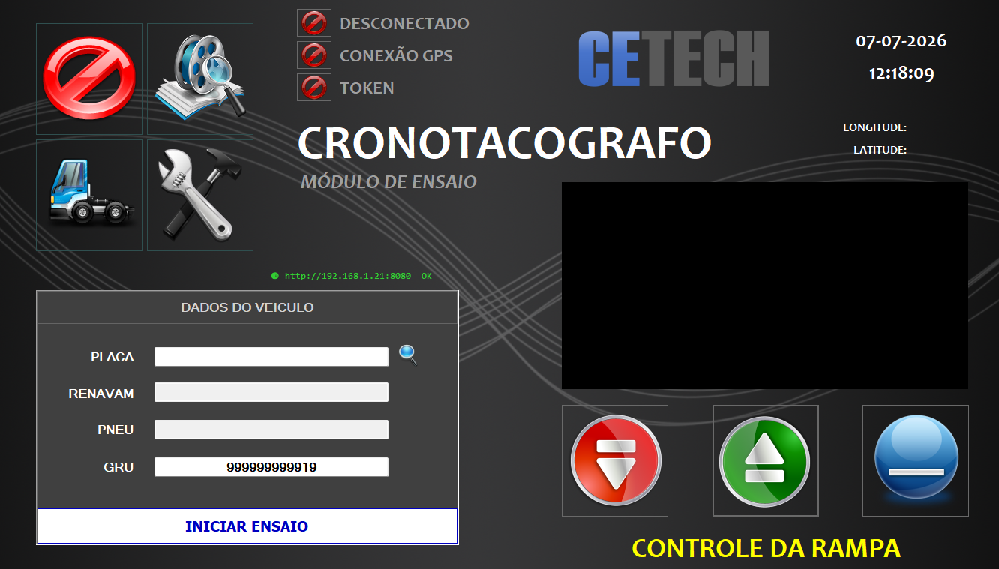
A tela principal é o centro de controle do sistema. A partir dela, o operador pode iniciar ensaios, acessar configurações, cadastrar veículos e visualizar relatórios.
4.2 Indicadores de Status
Antes de iniciar qualquer ensaio, o operador deve verificar os três indicadores principais (flags) no canto superior da tela:
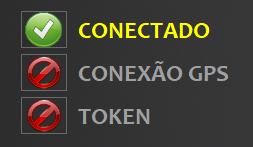
| Indicador | Função | Estados |
|---|---|---|
| SERIAL | Estado da conexão com a PCI | CONECTADO (verde) / DESCONECTADO (cinza) |
| GPS | Estado do sinal GPS | ATIVO (verde) / INATIVO (cinza) |
| TOKEN | Indica bloqueio por MQTT | BLOQUEADO / OK |
| Lat / Lon | Coordenadas GPS atuais | Latitude e Longitude |
| Data / Hora | Data e hora (sincronizadas com GPS) | dd-MM-yyyy / HH:mm:ss |
| Web URL | URL do servidor web embarcado | http://IP:8080 |
4.3 Dados do Veículo
Campos para entrada dos dados do veículo a ser ensaiado:
| Campo | Descrição | Obrigatório |
|---|---|---|
| PLACA | Placa do veículo (ex: ABC1D23) | Sim |
| RENAVAM | Número do RENAVAM (11 dígitos) | Sim |
| PNEU | Medida do pneu (ex: 215/75R17.5) | Sim |
| GRU | Número da Guia de Recolhimento da União | Sim (mín. 3 dígitos) |
O botão PESQUISAR (lupa) busca os dados do veículo no banco de dados a partir da placa informada, preenchendo automaticamente os campos.
4.4 Controles da Rampa
Três botões controlam o elevador/rampa do simulador de pista:
| Botão | Descrição |
|---|---|
| SUBIR | Aciona o motor para subir a rampa |
| DESCER | Aciona o motor para descer a rampa |
| PARAR | Para o motor imediatamente |
4.5 Câmera IP
O feed da câmera IP é exibido em tempo real. Clique sobre o vídeo para alternar entre os modos:
- Modo janela: Tamanho reduzido dentro do painel
- Modo tela cheia (Dock Fill): A imagem ocupa todo o espaço do painel
4.6 Botões de Navegação
| Botão | Descrição |
|---|---|
| INICIAR ENSAIO | Abre a tela de execução do ensaio |
| CADASTRO | Abre a tela de cadastro de veículos |
| CONFIG | Abre a tela de configuração do sistema |
| BANCO | Abre a tela de histórico de relatórios |
| SAIR | Fecha o sistema (para servidor web, câmera e serial) |
5. Configuração do Sistema
Para acessar a tela de configuração, clique no botão CONFIG na tela principal (destacado na imagem abaixo).
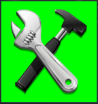
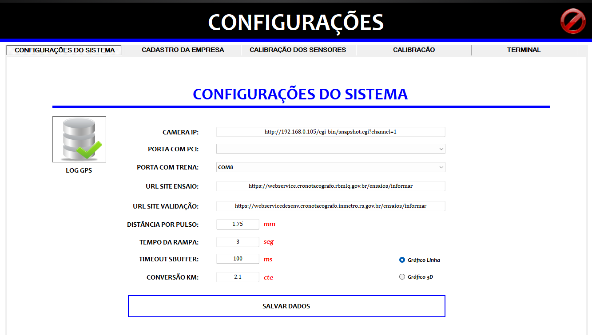
5.1 Aba Configurações
Parâmetros gerais de operação do sistema. Alguns campos são bloqueados e podem ser alterados apenas pelo administrador do sistema:
| Campo | Descrição | Permissão |
|---|---|---|
| Câmera IP (URL) | URL completa da câmera IP (ex: http://192.168.0.100:8080/shot.jpg) | Operador |
| COM PCI | Porta serial da PCI (ex: COM1) | Operador |
| COM Trena | Porta serial da trena a laser (ex: COM2) | Operador |
| Pulso (tamanho) | Tamanho de cada pulso do encoder em mm | Admin |
| URL Ensaio | URL do webservice de ensaio do Inmetro | Admin |
| URL Validação | URL para validação/envio do XML | Admin |
| Tempo Rampa | Timeout de segurança da rampa em segundos | Operador |
| Timeout Buffer | Tempo de buffer serial em ms (aglutinação de mensagens) | Admin |
| Conv Km/h | Fator de conversão para km/h | Admin |
| Tipo Gráfico | 2D (linha) ou 3D (área 3D) | Operador |
Clique em SALVAR CONFIGURAÇÕES para persistir as alterações.
5.2 Aba Empresa
Dados da empresa/instituição responsável pelos ensaios. Preencha as informações e selecione o logotipo para aparecer nos relatórios.
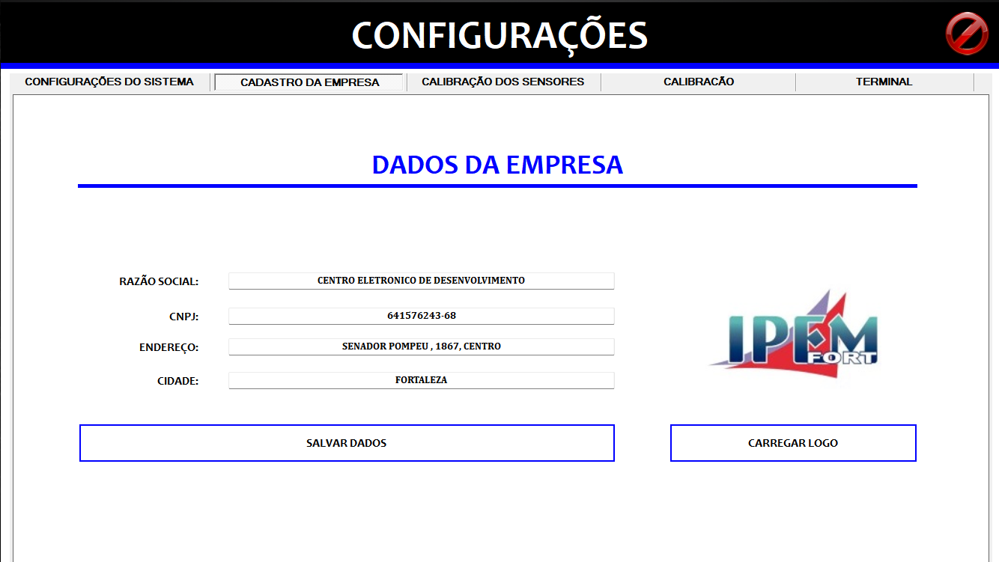
| Campo | Descrição |
|---|---|
| Razão Social | Nome completo da empresa |
| CNPJ | CNPJ (apenas números) |
| Endereço | Endereço completo |
| Cidade | Cidade / UF |
| Logotipo | Imagem do logo (selecionada via botão "SELECIONAR LOGO") |
5.3 Aba Calibração
Ferramentas para calibração e verificação do sistema de medição. Nesta tela o operador pode visualizar os dados enviados pela placa de controle, verificar se todos os sensores estão funcionando e se os valores estão corretos.
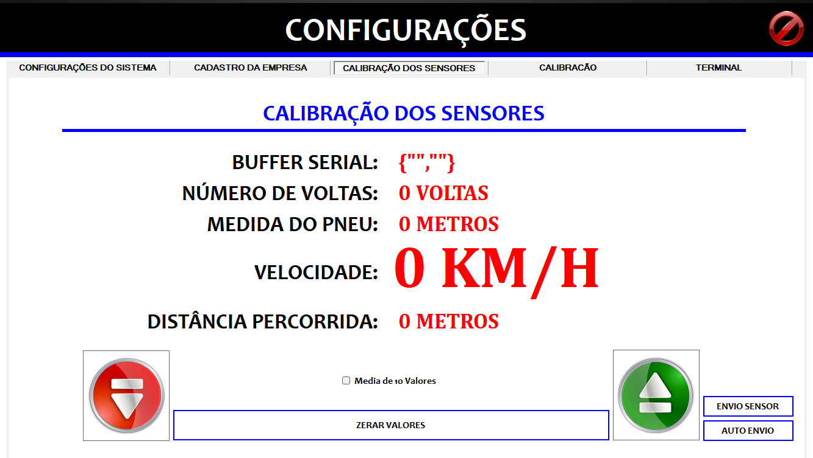
5.3.1 Medição com Trena a Laser
- Conecte a trena a laser na porta COM configurada
- Posicione o veículo sobre os rolos
- Clique em CAPTURAR TRENA
- A distância lida pela trena será exibida (em mm)
5.3.2 Medição com Rolos
- Acione o simulador de pista para girar os rolos
- Com o veículo acelerando acima de 45 km/h, clique em CAPTURAR ROLO
- O sistema coleta 10 amostras de pulsos e calcula a média
- A medida do pneu pelo rolo é exibida (em mm)
5.3.3 Divergência
O sistema calcula automaticamente a divergência percentual entre a medição a laser e a medição por rolos.
5.3.4 Monitoramento GPS
A seção GPS permite:
- Visualizar dados de GPS em tempo real
- Exibir latitude, longitude, altitude e número de satélites
- Abrir a localização no Google Maps
5.3.5 Salvamento do Relatório de Calibração
Após realizar as medições, preencha os dados da trena (modelo, certificado, nº série) e clique em SALVAR RELATÓRIO para registrar a calibração no banco de dados.
6. Cadastro de Veículos
Para acessar o cadastro de veículos, clique no botão CADASTRO na tela principal.
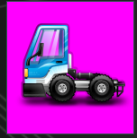
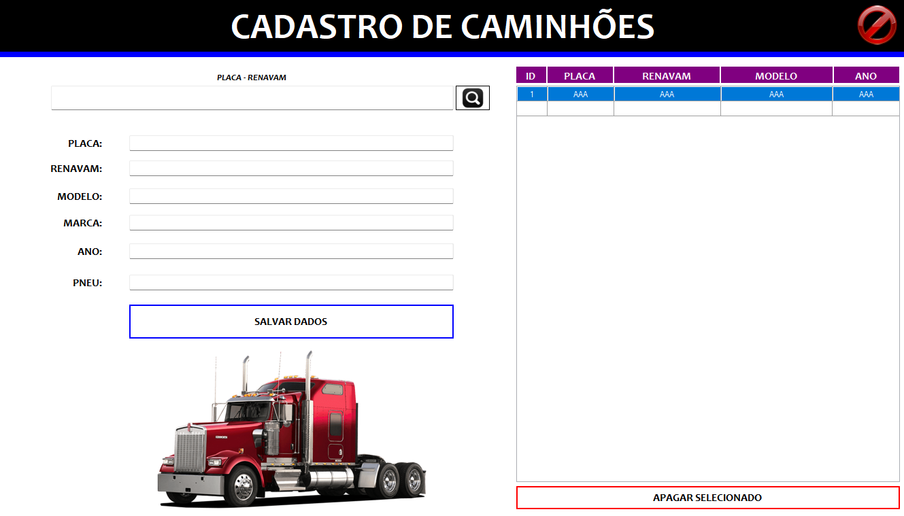
A tela de cadastro permite o registro e consulta de veículos no banco de dados do sistema. Após inserir os dados corretamente, clique em CADASTRAR para salvar. O veículo aparecerá no grid ao lado.
6.1 Campos do Cadastro
| Campo | Descrição | Validação |
|---|---|---|
| PLACA | Placa do veículo (formato Mercosul ou antigo) | Mín. 7 caracteres |
| RENAVAM | Registro Nacional de Veículos Automotores | 11 dígitos |
| MODELO | Modelo do veículo (ex: FH 460) | - |
| MARCA | Marca do veículo (ex: Volvo) | - |
| ANO | Ano de fabricação | - |
| PNEU | Medida do pneu (ex: 295/80R22.5) | - |
6.2 Operações
- CADASTRAR: Insere um novo veículo na base de dados
- PESQUISAR: Busca veículos por placa ou RENAVAM
- Grid de resultados: Clique em uma linha para carregar os dados do veículo nos campos
- SAIR: Fecha a tela
7. Execução do Ensaio
Esta é a tela principal de trabalho, onde o ensaio metrológico é executado em 5 estágios sequenciais.
7.1 Preparação
Antes de iniciar, certifique-se de:
- Veículo posicionado sobre os rolos do simulador de pista
- Dados do veículo preenchidos na tela principal (placa, RENAVAM, pneu, GRU)
- Câmera IP capturando a imagem do veículo
- GPS com sinal válido (coordenadas visíveis)
- Porta serial conectada (indicador SERIAL = CONECTADO)
- Token USB do certificado digital inserido
Ao clicar em INICIAR ENSAIO na tela principal:
- O sistema armazena a data/hora iniciais
- Captura uma foto do veículo via câmera IP
- Fecha a porta serial da tela principal
- Abre a tela de ensaio
- Inicia o recebimento de pulsos do encoder
7.2 Estágio 1 — Posicionamento e Medição do Pneu
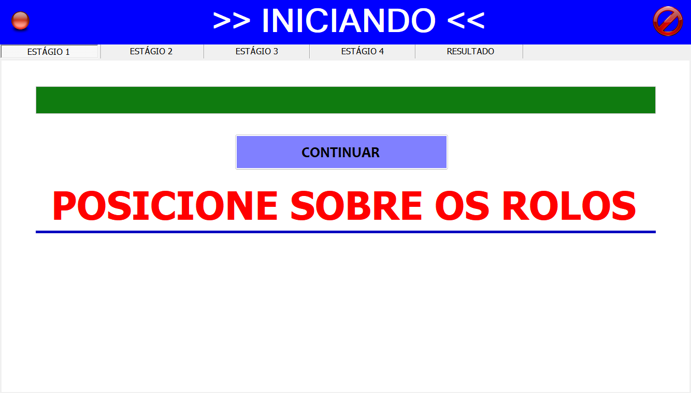
Estágio dividido em 5 sub-etapas automatizadas:
1.1 Posicionar Veículo sobre os Rolos
- Operador posiciona o veículo manualmente
- Avança clicando no botão da tela
1.2 Descer a Rampa
- O sistema aciona o motor para descer a rampa
- Barra de progresso indica o tempo do elevador descendo
- Botões SUBIR/DESCER manuais disponíveis
- Ao final, o sistema avança automaticamente para próxima etapa
1.3 Alinhamento do Veículo
- Sistema para a rampa automaticamente
- Operador deve acelerar o veículo acima de 20 km/h (indicador verde)
- Em seguida, acelerar acima de 30 km/h (segundo indicador verde)
- Após atingir 30+ km/h, barra de progresso é decrementada
- Sistema avança automaticamente para próxima etapa
1.4 Medição do Pneu
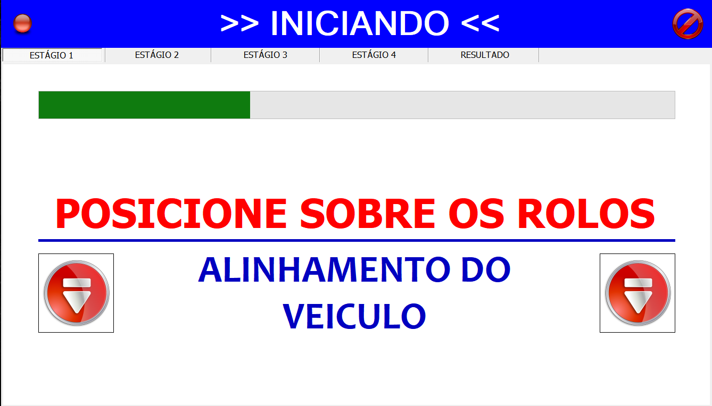
- Operador acelera acima de 45 km/h
- Sistema coleta 10 amostras de pulsos do encoder
- Ao final, calcula a média das 10 amostras = medida final do pneu
1.5 Parar o Veículo
- Sistema aguarda o veículo parar (velocidade = 0)
- Exibe contagem regressiva de 20 segundos
- Avança para o Estágio 2
7.3 Estágio 2 — Repouso Inicial (2 minutos)
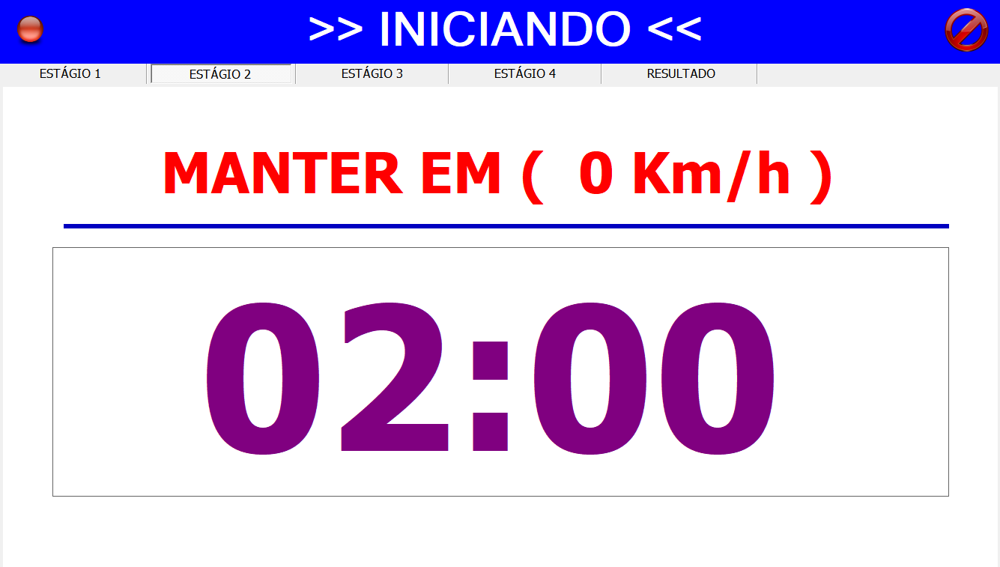
- Sistema registra o tempo inicial do ensaio
- Habilita o gráfico de velocidade (atualização a cada 500ms)
- Exibe cronômetro regressivo de 2:00 minutos
- Veículo deve permanecer parado (velocidade = 0)
- Barra de progresso indica o avanço (0% → 100%)
7.4 Estágio 3 — Ensaio Dinâmico
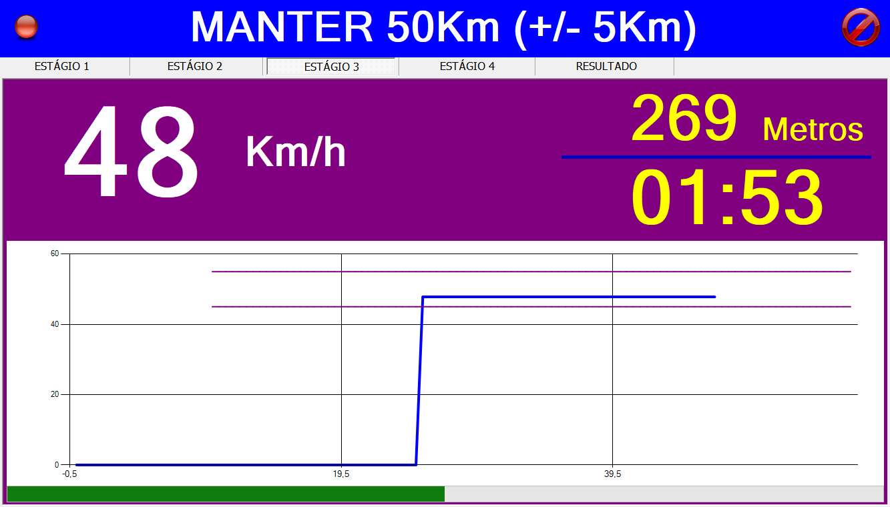
Fase principal do ensaio. O operador deve conduzir o veículo mantendo a velocidade entre 45 e 55 km/h por aproximadamente 2000 metros. Se a velocidade sair dessa faixa, o ensaio será abortado.
Indicadores em Tempo Real
| Indicador | Descrição |
|---|---|
| Velocidade | Velocidade instantânea em km/h (display grande) |
| Distância | Distância percorrida acumulada em metros |
| Tempo | Cronômetro progressivo (MM:SS) |
| Gráfico | Velocidade × Tempo com linhas de referência em 45 e 55 km/h |
Gráfico de Velocidade
- Linha azul: Velocidade dentro da faixa (45-55 km/h)
- Linha vermelha: Velocidade fora da faixa
- Linhas roxas horizontais: Referências em 45 e 55 km/h
- Atualização a cada 500ms
- Suporte a zoom no eixo X
- Modo 3D disponível (configurável)
Critério de Finalização
O ensaio dinâmico é encerrado automaticamente quando a distância percorrida ultrapassa 2000 metros.
7.5 Estágio 4 — Repouso Final (2 minutos)
- Cronômetro regressivo de 2:00 minutos
- Veículo deve permanecer parado
- Linhas de referência do gráfico são desabilitadas
- Ao final, sistema avança para resultados
7.6 Estágio 5 — Resultados e Relatório
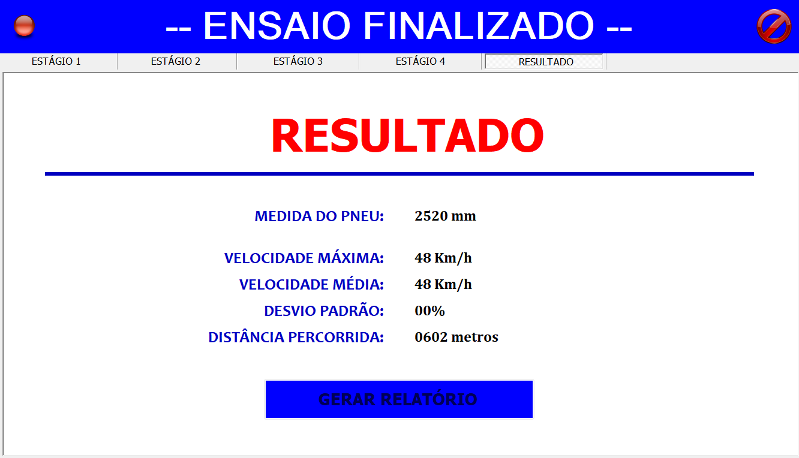
Resultados Exibidos
| Campo | Descrição |
|---|---|
| Pneu | Medida do pneu calculada em mm |
| Vel. Máxima | Velocidade máxima atingida no ensaio em km/h |
| Vel. Média | Velocidade média durante o ensaio em km/h |
| Desvio Padrão | Desvio padrão das velocidades em % |
| Distância Percorrida | Distância total do ensaio em metros |
Geração do Relatório
Ao clicar em GERAR RELATÓRIO (ou automaticamente ao final do ensaio), o sistema executa em sequência:
- Salva os dados do relatório no banco de dados
- Salva a imagem do gráfico gerado durante o ensaio
- Gera e assina digitalmente o XML de resultado
- Envia o XML ao webservice do Inmetro
- Exibe a resposta do servidor com o resultado do envio
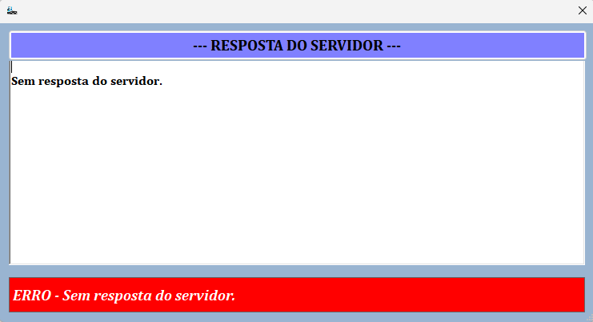
8. Histórico e Consultas
Para acessar os relatórios gerados, clique no botão BANCO na tela principal.
8.1 Relatórios de Ensaio
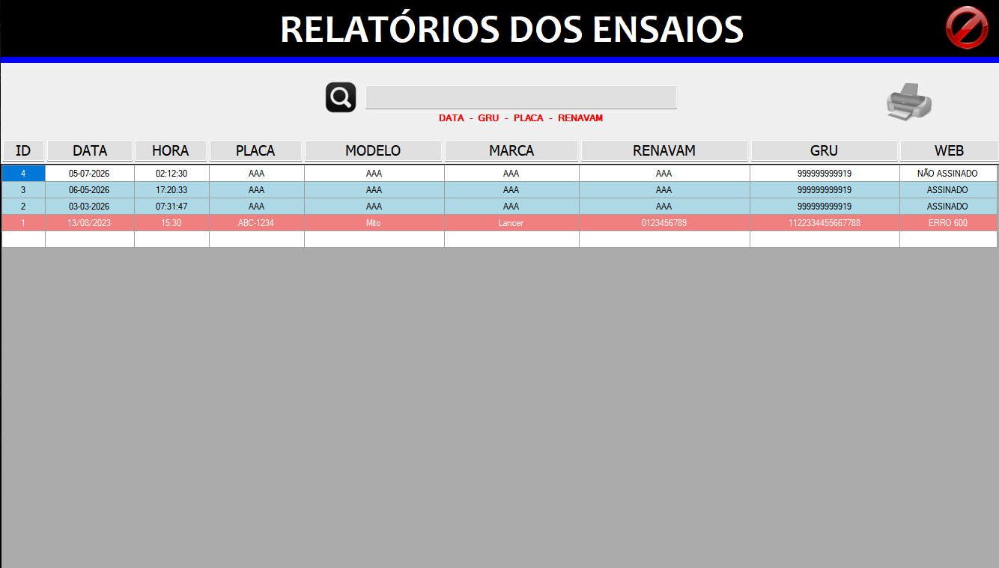
Permite consultar, visualizar e reenviar relatórios de ensaio armazenados no banco de dados.
Filtros de Pesquisa
- Placa: Busca por placa do veículo
- RENAVAM: Busca por número do RENAVAM
- GRU: Busca por número da GRU
- Data: Busca por período
Indicadores Visuais
| Cor da Linha | Significado |
|---|---|
| Azul | Relatório assinado e enviado com sucesso ao servidor do Inmetro |
| Branco | Relatório pendente — XML não enviado (falta de internet ou erro no servidor). Pode ser reenviado clicando em "ASSINADO" na coluna WEB |
| Vermelho | Relatório com erro no XML — deve-se realizar um novo ensaio |
Ações Disponíveis
- Visualizar Relatório: Abre o relatório para visualização
- Reenviar: Reenvia o XML ao webservice — útil em caso de falha de comunicação
8.2 Calibrações
Consulta o histórico de calibrações realizadas, incluindo medidas da trena, rolo, divergência e dados do veículo.
8.3 Logs de GPS
Visualiza o histórico de coordenadas GPS registradas durante as operações.
8.4 Resposta do Webservice
Após o envio do XML, a tela de resposta exibe:
- O XML de resposta completo formatado
- Código de status com descrição em português
- Cores indicativas: VERDE (sucesso) / VERMELHO (erro)
9. Interface Web (Controle Remoto)
O sistema possui um servidor HTTP embarcado que oferece uma interface responsiva para controle remoto via tablet ou smartphone.
9.1 Acesso
- O servidor inicia automaticamente na porta 8080
- A URL é exibida na tela principal (ex:
http://192.168.0.10:8080) - Acesse pelo navegador do dispositivo móvel (mesma rede WiFi)
9.2 Funcionalidades da Interface Web
Painel de Status
- Serial: CONECTADO / DESCONECTADO
- GPS: ATIVO / ---
- Hora: Relógio sincronizado
Iniciar Ensaio
Formulário para preencher Placa, RENAVAM, Pneu e GRU, com validação dos campos obrigatórios.
Controle da Rampa
Botões SUBIR, DESCER e PARAR para acionamento remoto.
Dashboard do Ensaio
Durante a execução do ensaio, exibe em tempo real:
- Estágio atual (ETAPA 1/5, 2/5 etc.)
- Sub-etapa e descrição
- Barra de progresso
- Velocidade, tempo, distância
- Gráfico de velocidade com linhas de referência em 45 e 55 km/h
- Botão "Avançar Estágio"
Resultados
Ao final do ensaio, exibe os resultados (pneu, velocidades, desvio, distância).
10. Manutenção e Solução de Problemas
10.1 Conexão Serial — PCI
| Problema | Causa Provável | Solução |
|---|---|---|
| "SERIAL DESCONECTADO" | Porta COM incorreta | Verificar COM no Gerenciador de Dispositivos |
| Sem pulsos recebidos | PCI desligada | Verificar alimentação da PCI |
| Dados corrompidos | Baud rate incorreto | Verificar 115200 baud |
| Timeout de buffer | Mensagens parciais | Ajustar timeout na configuração (padrão: 50ms) |
10.2 Câmera IP
| Problema | Causa Provável | Solução |
|---|---|---|
| Tela preta no vídeo | URL incorreta ou câmera offline | Verificar URL e credenciais |
| Erro de autenticação | Usuário/senha incorretos | Verificar credenciais de acesso |
10.3 GPS
| Problema | Causa Provável | Solução |
|---|---|---|
| Sem coordenadas | GPS sem sinal | Aguardar fixação (céu aberto) |
| Coordenadas zeradas | Timeout de leitura | Clicar no indicador GPS para forçar nova leitura |
10.4 Banco de Dados
| Problema | Causa Provável | Solução |
|---|---|---|
| "Erro no Banco de Dados" | LocalDB não instalado ou parado | Instalar SQL Server LocalDB 2016 |
| Banco de dados não anexa | Versão do SQL incompatível | Usar SQL Server 2016 ou superior |
| Erro de permissão | Executar sem admin | Executar como Administrador |
10.5 Certificado Digital / Assinatura XML
| Problema | Causa Provável | Solução |
|---|---|---|
| "Certificado não encontrado" | Token não inserido ou driver ausente | Inserir token e verificar drivers |
| Erro de assinatura | Certificado expirado | Verificar validade do certificado |
| Erro de assinatura inválida | Certificado não reconhecido pelo Inmetro | Utilizar certificado ICP-Brasil |
10.6 Envio ao Webservice
| Problema | Causa Provável | Solução |
|---|---|---|
| "Sem resposta do servidor" | Falha de rede ou URL incorreta | Verificar conexão internet e URL |
| "Falha de conexão" | Servidor indisponível | Tentar novamente mais tarde |
| Erro 3100 | Ambiente de homologação | Usar GRU de homologação específica |
10.7 Bloqueio Remoto
O sistema verifica remotamente se há bloqueio ao iniciar. Se o sistema estiver bloqueado:
- Exibe mensagem de erro ao tentar iniciar ensaio
- Impede a inicialização de novos ensaios
10.8 Rampa / Simulador de Pista
| Problema | Causa Provável | Solução |
|---|---|---|
| Rampa não desce | Timeout excedido | Verificar configuração de tempo da rampa |
| Motor não para | Falha de comunicação | Clicar em PARAR |
11. Anexos
A. Glossário de Termos Técnicos
| Termo | Descrição |
|---|---|
| Cronotacógrafo | Instrumento registrador de velocidade e tempo em veículos de transporte |
| PAC | Posto Autorizado de Cronotacógrafo |
| IPEM | Instituto de Pesos e Medidas (órgão delegado do Inmetro) |
| NIE-DIMEL-140 | Norma do Inmetro que regulamenta ensaios em cronotacógrafos |
| GRU | Guia de Recolhimento da União (taxa de serviço) |
| RENAVAM | Registro Nacional de Veículos Automotores |
| Simulador de Pista | Equipamento de rolos motorizados que simula o deslocamento do veículo |
| PCI | Placa de Controle e Interface (hardware de aquisição de dados) |
| Encoder | Sensor que gera pulsos proporcionais à rotação dos rolos |
| NMEA | National Marine Electronics Association (protocolo padrão de GPS) |
| MQTT | Protocolo utilizado para verificação remota de bloqueio do sistema |
| X.509 | Padrão de certificado digital utilizado para assinatura de documentos XML |
B. Referência da Norma NIE-DIMEL-140
A norma NIE-DIMEL-140 estabelece os requisitos metrológicos e procedimentos de ensaio para cronotacógrafos. O documento oficial está disponível na pasta Suporte/ do sistema:
Suporte/NIE-DIMEL-140 - Cronotacografo.pdf